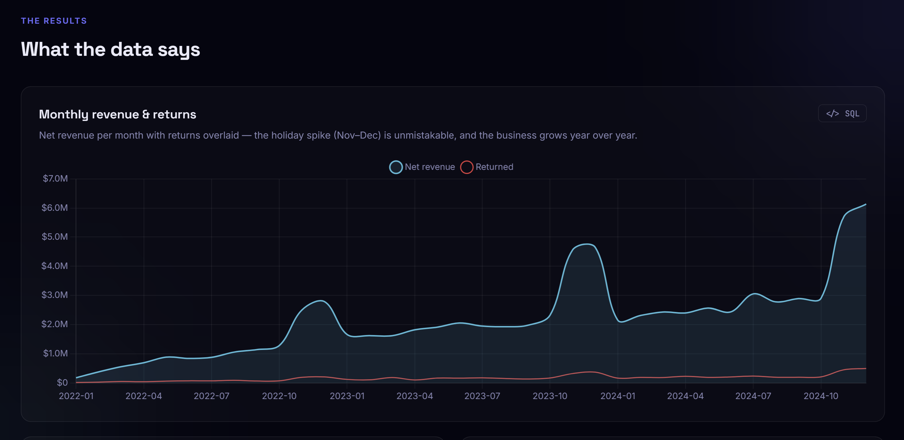
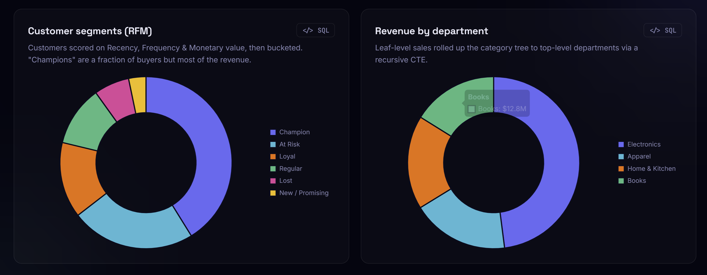
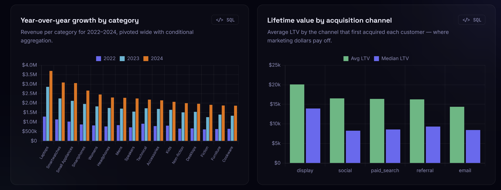
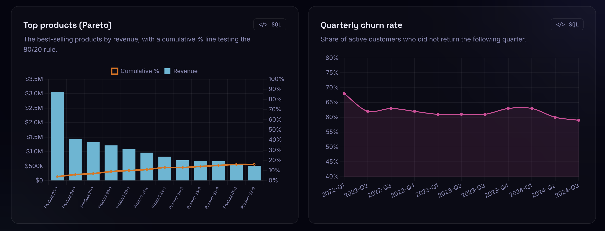
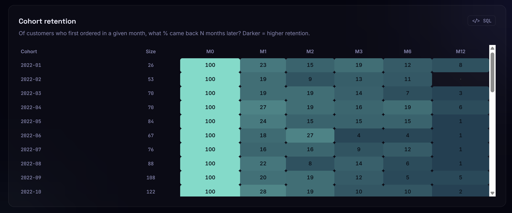
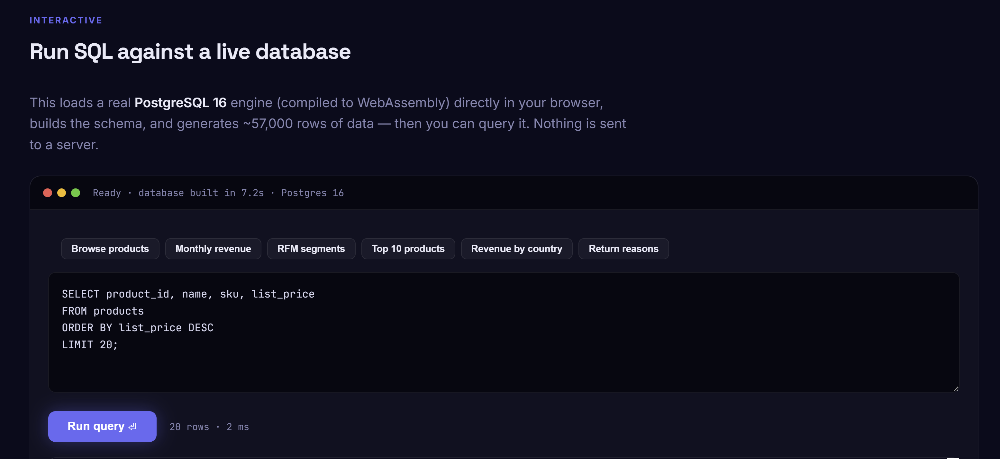

A simulated online retailer analysed end-to-end in PostgreSQL — 10 analytical SQL queries covering revenue trends, RFM segmentation, cohort retention, and customer lifetime value, rendered as a live dashboard with a real Postgres instance running entirely in the browser.

Net revenue per month with returns overlaid — the November–December holiday spike is unmistakable, and the business grows year over year, closing near $6.2M in the final month of data.

Customers scored on Recency, Frequency, and Monetary value and bucketed into named segments — "Champions" are a fraction of buyers but drive most of the revenue. Alongside it, leaf-level sales rolled up the category tree to top-level departments via a recursive CTE.

Revenue per category for 2022–2024, pivoted wide with conditional aggregation — Laptops and Smartwatches lead growth. Alongside it, average customer lifetime value broken out by acquisition channel, showing where marketing dollars actually pay off.

Best-selling products by revenue with a cumulative percentage line testing the 80/20 rule, next to the share of active customers who didn't return the following quarter — churn holds fairly steady in the 60–68% range across every quarter measured.

Of customers who first ordered in a given month, what percentage came back N months later — the classic cohort triangle, colour-scaled so darker cells mean higher retention.

A real PostgreSQL 16 engine compiled to WebAssembly, running directly in the browser — it builds the schema and generates ~57,000 rows of data, then lets visitors run their own SQL against it. Nothing is sent to a server.
Most SQL portfolio pieces stop at SELECT and GROUP BY. This one leans into window functions, a recursive CTE for a full category tree, RFM scoring, cohort triangles, and a PL/pgSQL function backing a materialised view — run against three years of data that behaves like a real business, complete with seasonality, growth, and churn.
The dashboard itself takes it a step further: rather than static screenshots, every chart is backed by a real PostgreSQL 16 engine compiled to WebAssembly and loaded directly in the visitor's browser, alongside a free-form SQL playground for running custom queries against the live dataset.
Simple GROUP BY queries can't answer questions like "which customers came back three months later" or "how does revenue roll up a category tree" — those need window functions and recursion.
A static chart doesn't prove the SQL behind it is real. Every chart on the live dashboard links back to the exact query that produced it.
A live SQL demo normally needs a hosted database and a backend to guard it. Running Postgres client-side removes that entirely.
Designed a normalised PostgreSQL schema, then generated three years of realistic transaction data — 5,000 customers, 14,204 orders, 56,816 order lines — with genuine seasonality and churn baked in.
Wrote ten SQL queries spanning window functions, conditional aggregation, cohort analysis, RFM scoring, and a recursive CTE for category hierarchy roll-ups.
Backed the RFM segmentation with a genuine PL/pgSQL function and a materialised view, rather than recomputing scores on every read.
Compiled PostgreSQL 16 to WebAssembly to run entirely client-side, built the schema and data on page load (~7 seconds), and wired every chart plus a free-form SQL editor directly to it — no server involved.
Revenue spikes sharply every November–December, with the business also growing year over year — the final month of data closes near $6.2M, its highest point yet.
RFM segmentation shows "Champions" make up a clear minority of the customer base but account for the largest single share of total revenue.
Average lifetime value by acquisition channel peaks for customers first acquired via display advertising (~$20K), ahead of social, paid search, referral, and email.
Quarterly churn holds in the 60–68% range across nearly every quarter measured — most customers who buy once do not return the following quarter, regardless of season.
Since Champions drive an outsized share of revenue from a small customer base, retention offers targeted specifically at this segment likely have the highest ROI of any lever available.
With display-acquired customers showing the highest average LTV, testing an increased display budget — and tracking whether that LTV edge holds at higher spend — is a natural next experiment.
With churn consistently above 60% quarter to quarter, the biggest lever is likely getting a customer to their second purchase at all — a post-purchase win-back flow would directly attack this number.
Laptops and Smartwatches are growing fastest year over year — worth checking whether marketing spend and inventory planning already reflect that shift.
The November–December surge is large and consistent enough to justify dedicated demand planning, rather than treating it as a one-off each year.
The 80/20 test on top products is a natural jumping-off point for a formal ABC inventory classification, tiering stocking and reorder rules by product importance.